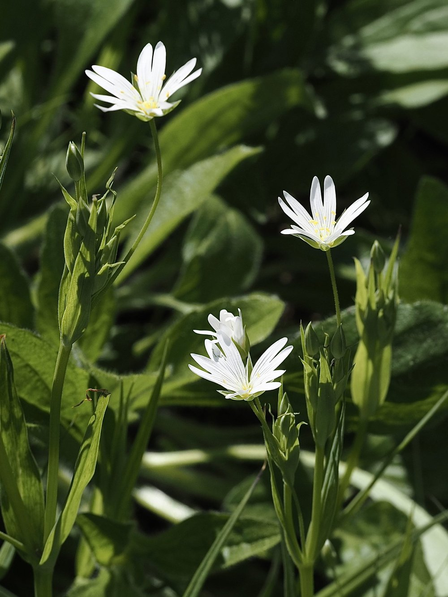
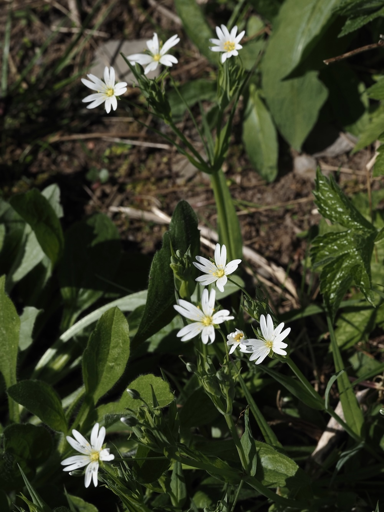
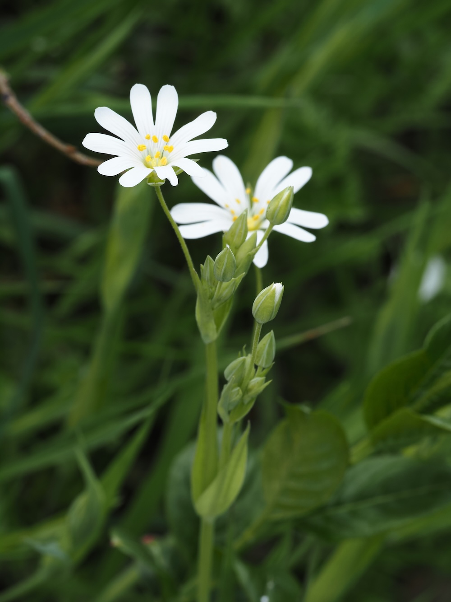
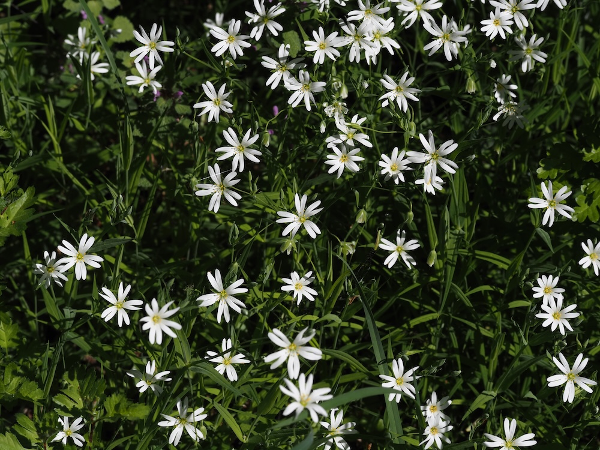

Zehn Blütenblätter – die nur fünf sind
Auf den ersten Blick scheint die Sternmiere zehn Blütenblätter zu haben. Tatsächlich sind es fünf, jedes bis fast zur Basis zweigespalten. Dieses Merkmal teilt sie mit der Vogelmiere und vielen anderen Nelkengewächsen: Was nach Opulenz aussieht, ist ein evolutionärer Trick zur optischen Vergrößerung – mehr Signal, weniger Material. Für anfliegende Insekten ein klares Landemuster, für Botaniker ein verlässliches Bestimmungsmerkmal.
Das grasartige Täuschungsmanöver
Zwischen den Blüten wirkt die Sternmiere fast wie ein Gras: schmale, starre, grau-grüne Blätter an vierkantigen Stängeln. Diese Gestalt ist kein Zufall – in dicht bewachsenen Waldsäumen profitieren schmalblättrige Pflanzen vom kühleren Mikroklima und der geringeren Verdunstung. Sobald die Pflanze blüht, verrät sie sich sofort: Die großen weißen Blüten leuchten aus dem Grün wie kleine Leuchtfeuer am Waldrand. ‘Holostea’ = ganzknochig:Der lateinische Name spielt auf die zähen, fast ‘knochig’ starren Stängel an – ein deutlicher Unterschied zur viel weicheren Vogelmiere.